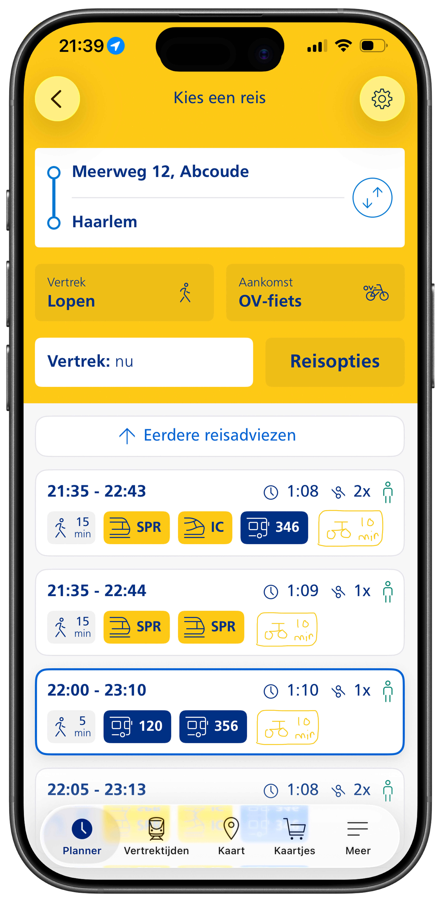

05
PijnpuntenWaar loopt Dirk tegenaan?
Problemen op zowel UX- als Interaction Design-vlak.

UX Probleem
Vage foutmelding bij pas koppelen
Geen uitleg wat er fout gaat of wat het "Bedrag"-veld betekent.

ID Probleem
OV-fiets verstopt in reisopties
Verborgen onder "Aankomst: Lopen", niet intuïtief.

ID Probleem
Reisplanner toont geen fietsinfo direct
Geen fietstijd of fietsicoon zichtbaar zonder te scrollen.

ID Probleem
Verkeerd station getoond
App toont fietsinfo van een ander station, alleen zichtbaar na helemaal scrollen.

UX Probleem
Pinpas werkt niet voor OV-fiets
Kritieke info in kleine lettertjes. Ontdekt pas op het station.
⚖️ Betere UX = minder frustratie voor Dirk én minder klachten voor NS.
Mijn impact: betere ervaring, minder declaraties en dus minder klantenservice kosten voor NS.
NS staat voor de beste reis- en UX-ervaring voor elke reiziger.